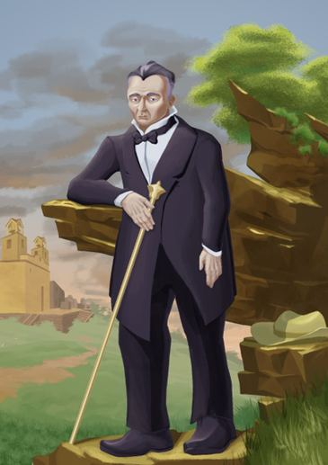

Um contingente numeroso amplia o poder econômico e o status social do senhor.
Barão Gavran Junkal
Gavran Junkal, sétimo filho e caçula de Jorvan Junkal, herdou a Fazenda Campo Feliz, um grande contingente de escravizados e os direitos políticos sobre a cidade de Thomária. Formado no convívio entre a administração rural, a religião e os círculos políticos regionais, consolidou sua atuação pública a partir dessas experiências.
Em seus discursos, Gavran sustenta a necessidade de maior autonomia das elites agrárias e menor carga tributária sobre a produção rural. Argumenta que a prosperidade e a estabilidade da região dependem da liberdade dos proprietários para gerir suas terras, suas atividades econômicas e sua força de trabalho sem interferência externa.
A escravidão, em sua visão, não figura como tema de questionamento político; ao contrário, Gavran defende que os proprietários de terras tenham liberdade para manter posse sobre escravizados, entendendo que um contingente numeroso amplia o poder econômico e o status social do senhor.
- Traços
- Eloquente e estrategista político.
- Frio ao tratar questões sociais como problemas administrativos.
- Ideais
- (Ordeiro) A hierarquia social garante estabilidade.
- (Neutro) A prosperidade econômica é mais importante que dilemas individuais.
- Vínculo
- A Fazenda Campo Feliz e o legado da família Junkal.
- Defeito
- Incapaz de reconhecer injustiça estrutural como problema moral.
- Aliados
- Padre Aotonni Junkal, Gavran Junkal Jr., Jessiil
- Rivais
- Lazarius